A 原始RGB
A A · Truck Right ✓视频读取失败；请查看下方关键帧备用预览。
A与C正确，B与D发生左右方向混淆，是主体运动提示可能干扰运镜判断的典型。
主体区域光流仍包含相机运动贡献，不能解释为纯物体独立运动；这里仅报告预测关联。
视频读取失败；请查看下方关键帧备用预览。
视频读取失败；请查看下方关键帧备用预览。
视频读取失败；请查看下方关键帧备用预览。
视频读取失败；请查看下方关键帧备用预览。
箭头表示像素的表观运动，不是相机的物理方向；显示长度经过缩放。C的非动态候选区域不等同于真实静态背景。
红色是缓存中的最终动态预测叠加，不是人工GT；下列面积为选中单帧值。
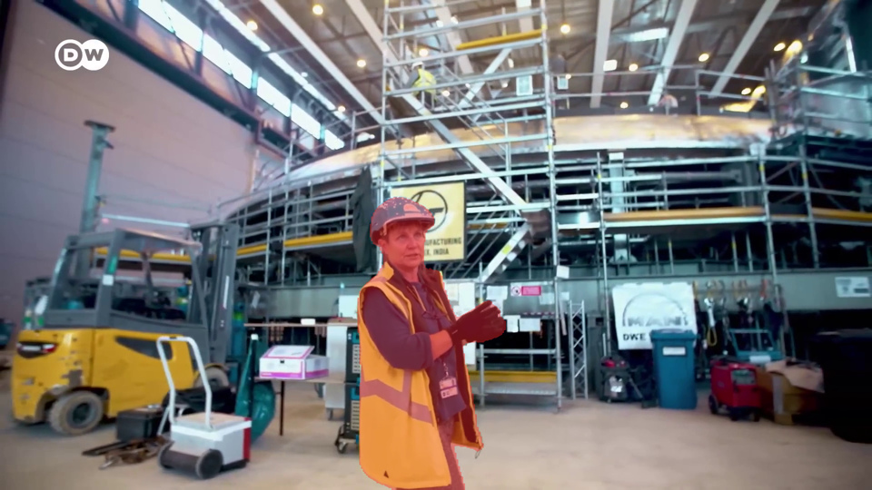
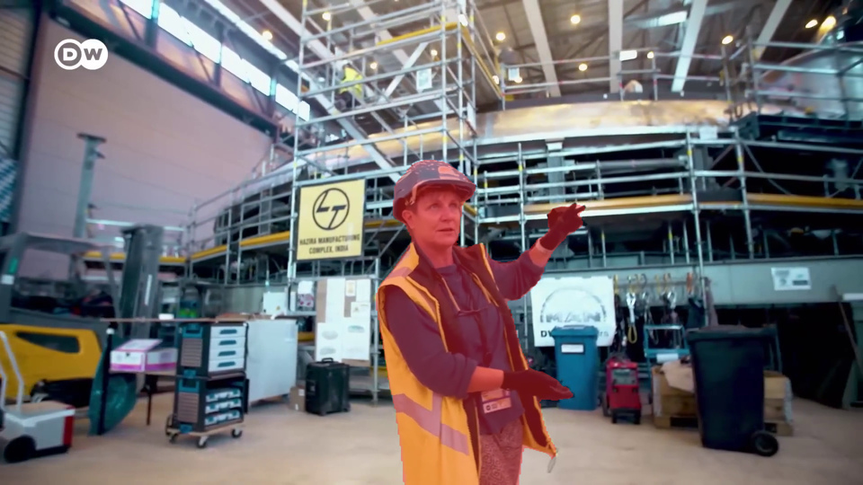
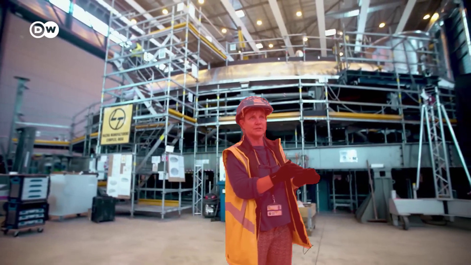
同一行对齐同一处理帧；视频PTS与源PTS分别保留，未插帧或重新编码。
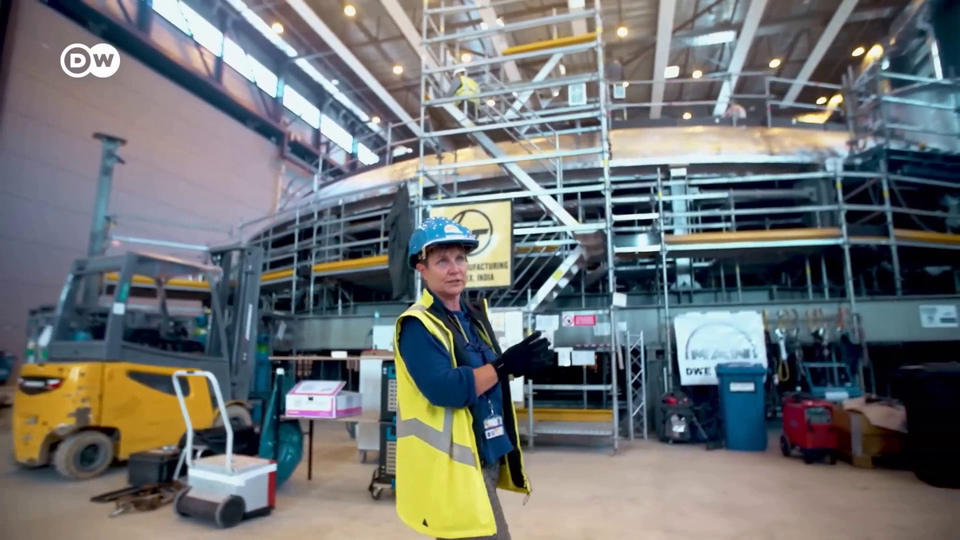
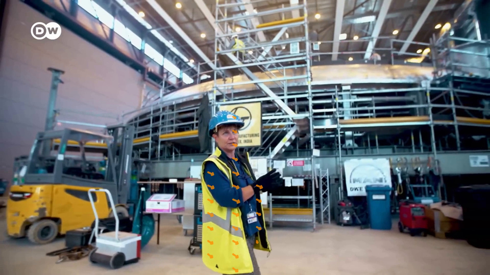
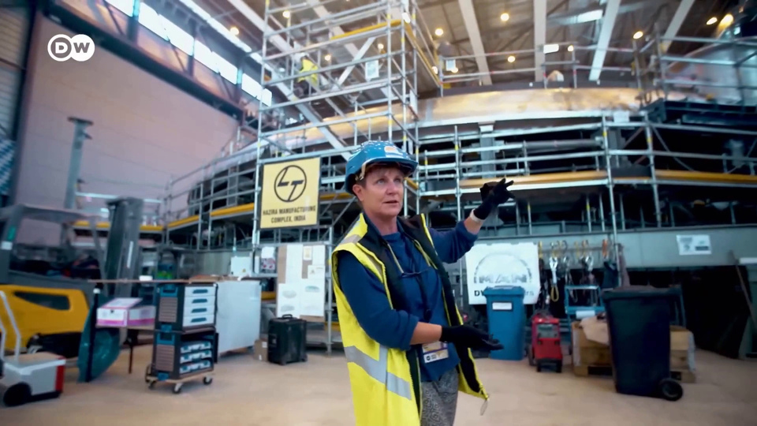
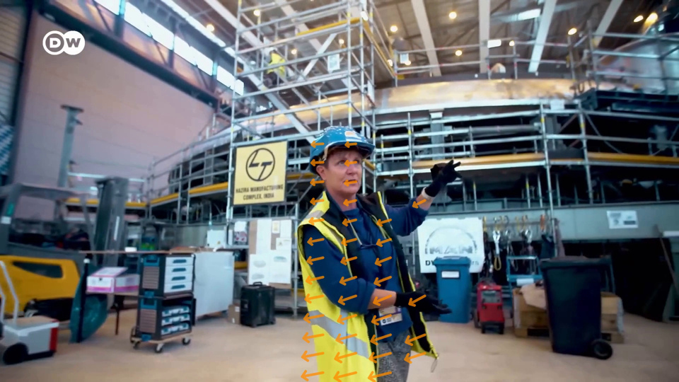
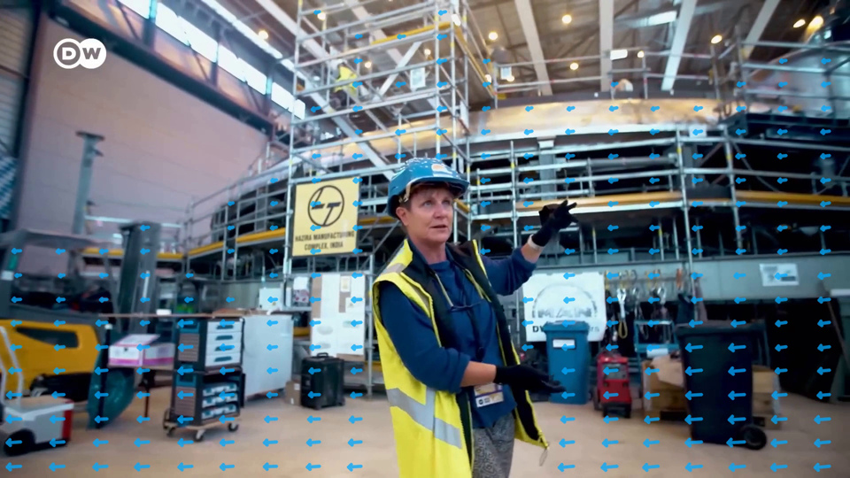
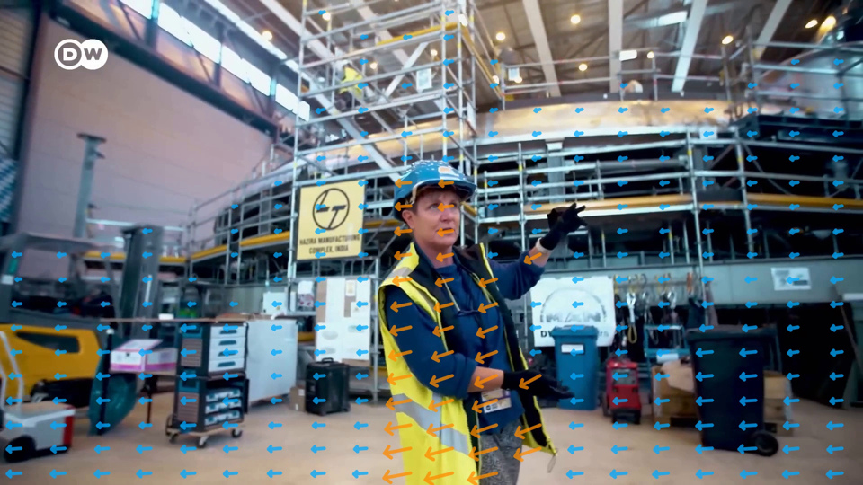
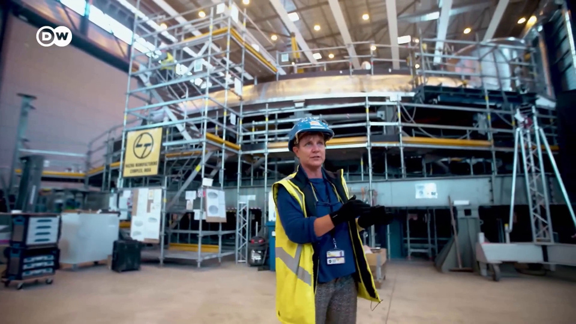
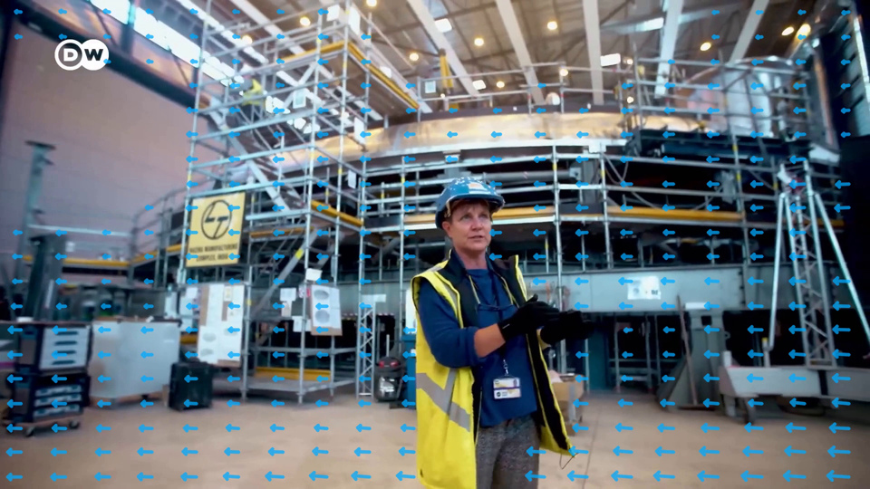
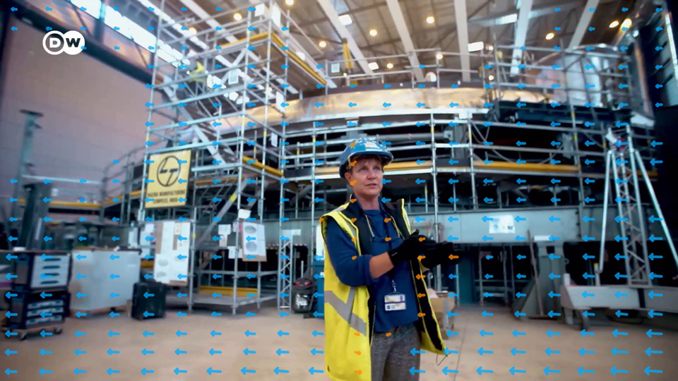
这些案例是按已知结果事后筛选的定性展示；非空掩码不等同于分割正确，不计算没有GT的分割准确率。
预测批次：old6_motion_evidence_v1；Prompt v1。GT只用于事后评分。
输入视频均为正式实验MP4；SHA-256与保存预测中的指纹核对。完整源路径见 used_files.json。